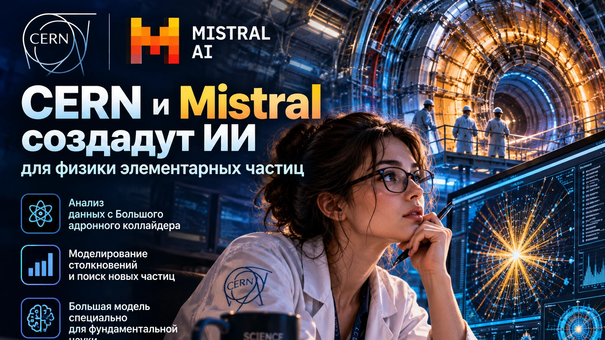

← Компании и продуктыХПИИ / Компания
Материалов: 4Mistral AI
Открытые модели, голосовые помощники и научные проекты Mistral AI.
30 октября 2026

21 октября 2026
16 октября 2026

ИИ научили заглядывать в будущее? Mistral выпустила четыре необычные модели
Новости ИИMistral AI представила Timestral — семейство моделей для прогнозирования временных

CERN и Mistral создадут ИИ, который поможет искать новые частицы
Новости ИИCERN и Mistral AI объявили о намерении совместно разработать Large Physics Model — большую модель искусственного интеллекта для физики элементарных